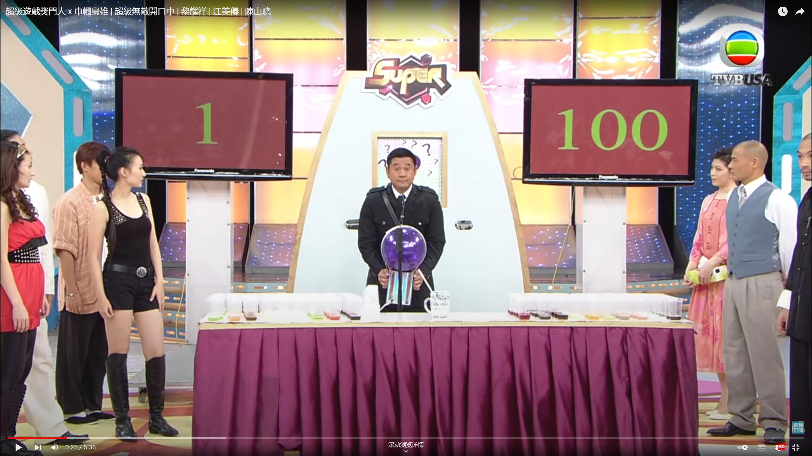

Guess the number
Math 3911 project
Theme: game shows on TV
(Use the arrow keys on the bottom or the keyboard to navigate)
Guess the number
- This is a game in the "Super Trio series".
- In this game, the players are divided into two teams.
- They wait in two lines and go up one by one to guess a number between 1-100 while avoiding a trigger number.
- The range narrows down with each guess.
- If the contestant guesses the trigger number, he loses the game and gets a penalty from others.
Click here to watch the game show on YouTube. You can also play a mini-game starting from "1-10".

Analyse the game
Assumptions:
- The trigger number is generated uniformly.
- For example, for the game starting with "1-100", 1 and 100 are not allowed
to choose.
- Then for the rest of the numbers: $2, 3, 4, \dots, 98,99,$ each number may be selected as the trigger number with the same probabiliy $\frac{1}{98}.$
Analyse the game: assumptions
- If a contestant chooses the triger number, the team of the contestant loses the game while the other team wins.
- For a team, the payoff of winning the game is said to be 1 and the payoff of losing the game is said to be -1.
- Every team member tries his best to choose the number that can maximize the expectation of the payoff for his team.
- The expectation of the payoff is the average payoff for all possible conditions.
- Under previous assumptions, the game is a
- two-person (There are two teams.)
- zero-sum game (When one team wins, the other team loses. The sum of the payoffs of both teams equals 0.)
- with finitely many pure strategies. (There are finitely many numbers to choose.)
- According to the Von-Neumann’s theom:
the maximum expected payoff the first team can guarantee equals to
the minimum expected payoff the second team can ensure that the first team gets no more than.
- This expected payoff is called the value of the game.
Equivalent Sub-games
Sub-games with the same number of available numbers to choose are equivalent and have the same value.
- For sub-games like "1-3", "2-4" or "5-7", there is only one number to choose.
The first team to choose must lose and get the payoff -1. The value for such sub-games is denoted as $v(1) = -1$.
- For sub-games like "1-4", "2-5" or "5-8", there are two numbers to choose.
The first team to choose has a probability of one half to encounter the trigger number and get the payoff -1.
Otherwise, the team will win and get the payoff 1.
The expectation of the payoff is 0. We denote the value for such sub-games as $v(2) = 0$.
- Generally, the value of a sub-game with $n$ available numbers to choose is denoted as $v(n)$. We also define $v(0)=0$.
The value of the game
- For a sub-game with $n$ available numbers, by choosing the $i$-th number, the team
-
has a probability of $\frac{1}{n}$ to get the trigger number and lose;
-
has a probability of $\frac{i-1}{n}$ to enter a sub-game where numbers indexed from 1 to $i-1$ are available to choose;
-
has a probability of $\frac{n-i}{n}$ to enter a sub-game where numbers indexed from $i+1$ to $n$ are available to choose.
- The value $v(n)$ can be computed recursively:
$$v(n) = \max_i \left\{\frac{1}{n}\cdot (-1)+ \frac{i-1}{n}\cdot(-v(i-1)) + \frac{n-i}{n}\cdot(-v(n-i)) \right\}, $$
for $i = 1, \dots, n.$
- The indices $i$ that obtain the maximum value indicate the optimal numbers to choose.
| $n$ |
$v(n)$ |
optimal indices to obtain $v(n)$ |
| 1 |
-1 |
1 |
| 2 |
0 |
1, 2 |
| 3 |
$\frac{1}{3}$ |
2 |
| 4 |
$0$ |
2, 3 |
| 5 |
$-\frac{1}{5}$ |
ALL |
| 6 |
0 |
1, 2, 5, 6 |
| 7 |
$\frac{1}{7}$ |
2, 6 |
| 8 |
0 |
2, 3, 6, 7 |
| 9 |
$-\frac{1}{9}$ |
ALL |
| 10 |
$0$ |
1, 2, 5, 6, 9, 10 |
$$v(n) = \left\{ \begin{aligned} & 0, &\text{if} \quad n = 2k \\
& -\frac{1}{n}, &\text{if} \quad n = 4k+1 \\
& \frac{1}{n}, &\text{if} \quad n = 4k+3.
\end{aligned}\right.$$
For some $n$, choosing the numbers right in the middle may not be a good strategy.
However, for all $n>1$, choosing the second number is always optimal.
Conclusions
For the original game starting with "1-100":
- The value of the game is $v(98) = 0$. Hence, in expectation, both teams will get a payoff of 0.
This game is fair such that which team guesses the number first does not matter.
- Always choosing the second number when applicable is a simple but optimal strategy for the game.
For example, choosing 3 for "1-100", or choosing 6 for the sub-game "4-10".
variation of the game
- A natural question is to ask what if the trigger number is not chosen uniformly.
For example, the probability of being a trigger number for numbers ending with 8: numbers ending with 0: other numbers = 5 : 3 : 1.
- On that condition, sub-games like "1-4" and "7-10" are not equivalent any more.
- However, we can still denote the value of a sub-game "$m$-$n$" as $v(m,n)$ and work ouk these values via a recursive formula with the aid of a computer.
variation of the game
| $m$-$n$ |
$v(m, n)$ |
optimal choice |
| 6-9 |
0.667 |
7 |
| 6-10 |
-0.429 |
8 |
| 6-11 |
0.000 |
10 |
| 1-10 |
0.167 |
6 |
| 1-50 |
0.026 |
46 |
| 1-51 |
-0.013 |
3 |
| 1-100 |
0.013 |
96 |
This time, the game is not fair. As $v(1, 100) >0$, the first team has an advantage.
Intuitively, we should avoid numbers ending with 8 or 0 if possible, but this is not true. For the sub-game "6-10", 8 is the optimal choice; and for the sub-game "6-11", 10 is the optimal choice!